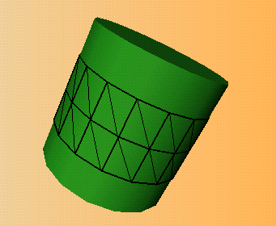

The compiled vertex arrays extension, SGI_compiled_vertex_array, offers these benefits:
This section first provides the Compiled Vertex Array Extension Overview to introduce the extension, then looks in some detail at Using Compiled Vertex Arrays and lists New Functions.
The OpenGL 1.1 vertex array functionality makes it possible to place vertex data into arrays and then use blocks of data in the arrays to specify multiple geometric primitives through the execution of a single command (see "OpenGL 1.1 Vertex Arrays"). The compiled vertex array extension makes using the arrays even more efficient by allowing you to lock down the array if you expect that parts of it will be used multiple times.
Consider, for example, that when OpenGL draws a mesh, it draws triangle strips that share vertexes. Because OpenGL has to perform certain computations, such as lighting or transformation, for each vertex, it's an advantage if those vertexes that are shared can be locked down until all surfaces that contain them have been drawn.
A good example for this is a program that renders a cylinder, as shown in Figure 3-1.

Figure 3-1 : Example Figure for Compiled Vertex Arrays
The cylinder consists of a top and bottom and several triangle strips that form the sides. Because each corner in each triangle is also the corner in several other triangles, and each vertex is therefore used many times, it makes sense to lock the vertices and to avoid computing lighting or other vertex-specific information several times. The following pseudo-code illustrates this:
glInterleavedArrays().....) glLockArrays().....) glDrawElements (GL_TRIANGLE_STRIP).....) glDrawElements (GL_TRIANGLE_STRIP).....) glUnlockArrays()
Using the compiled vertex array extension only involves two functions:
When the vertex arrays are locked, OpenGL can compile--that is, transform and light--the array data or the transformed results of array data associated with the currently enabled vertex arrays.
Between glLockArraysSGI() and glUnlockArraysSGI(), ensure that none of the array data in the range of elements specified by first and count are changed. Changes to the array data between the execution of glLockArraysSGI() and glUnlockArraysSGI() commands may affect glDrawArrays(), glArrayElement(), or glDrawElements() commands in non-sequential ways.
glLockArraysSGI() and glUnlockArraysSGI() cannot be included in display lists.
If glDrawArrays(), glArrayElement(), or glDrawElements() reference an array element outside the range specified by first and count, the results are undefined.
Changing state between locked and unlocked arrays involves a performance hit because OpenGL may have to revalidate vertices.
void glLockArraysSGI (int first, sizei count) void glUnlockArraysSGI (void)